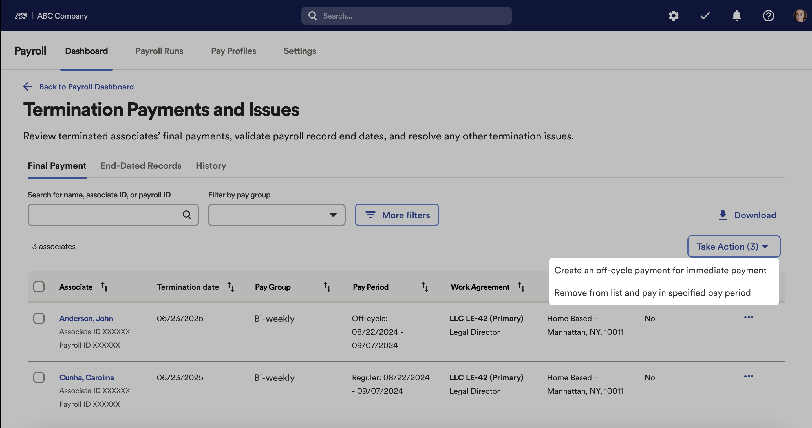
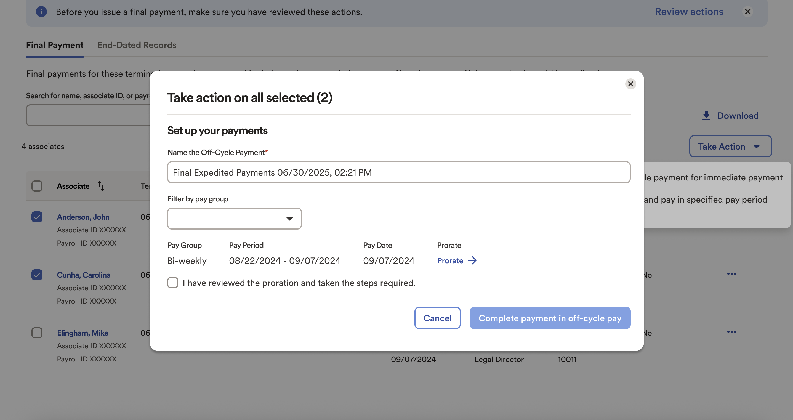
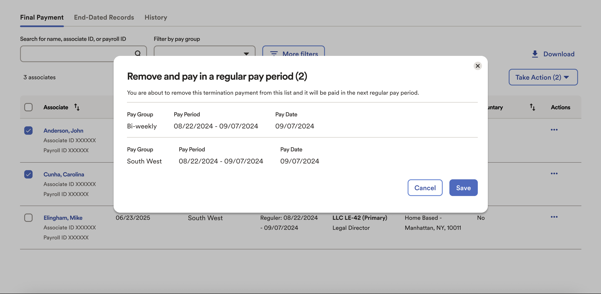

Termination workflow redesign / Final Payment
We redesigned the payroll termination and final pay experience to streamline offboarding, reduce manual errors, and improve legal compliance. The new design sets a clear standard for dashboard clarity and actionable notifications.
Process
- Research and discovery: Direct feedback from payroll practitioners and recurring usability complaints shaped priorities.
- Design and prototyping: Iterative concepts reviewed with user groups and enterprise clients, then refined with product, engineering, and compliance.
The Challenge
- Compliance risk: Immediate and accurate payout on termination is required in some regions. The old flow relied on memory and manual steps, which increased risk.
- Poor prioritization: Termination alerts were buried among routine tasks, with weak hierarchy and filtering. Critical items were easy to miss.
- No bulk capability: Mass terminations lacked bulk actions. High volume cases slowed teams and created frustration.
- Low cross-team clarity: Direct deposit and benefits changes came from other modules and were not visible in payroll, which raised uncertainty and support tickets.
Approach
- Focused termination tile: A dedicated dashboard tile, Termination Payments and Issues, surfaces only urgent and relevant offboarding tasks.
- Clear alerting: Immediate payout rules show as discrete, high-priority items. Teams see what must happen now and why.
- Bulk and off-cycle support: Group payouts, proration, and off-cycle payments save time and reduce repetitive data entry.
- Transparent records: A centralized view exposes end-dated payroll records and direct deposit status. Practitioners know what is complete and what is next.
- Research anchored: Decisions were grounded in interviews, usability findings, and client feedback from large enterprises.

Connecting terminations directly to OCP allows users to process final payments immediately, which is required by law in eight states. The remaining terminations can be included in the regular pay period.

Conecting terminations deirectly to OCP allowed the user to pay terminated users immediately

Conecting terminations deirectly to OCP allowed the user to pay terminated users immediately
Impact
- Smoother, legally sound offboarding that lowers compliance risk and support escalations.
- Actionable insights at a glance with less dashboard clutter.
- Shorter cycles for mass layoffs or high-volume terminations.
- A pattern for scale, suitable for organizations with 10,000 plus employees.
- Systematized action item design reusable across benefits, errors, and warnings.
- An example of deep collaboration across product, UX, and engineering.
The redesigned experience improves visibility, accuracy, and speed. It aligns legal requirements with a clear, guided workflow that scales without sacrificing clarity.
Next Steps
- Run a retrospective to measure adoption and collect feedback by role.
- Publish usability metrics post launch, then refine hierarchy and alerting based on data.
- Share learnings with design and HR communities to grow shared standards.